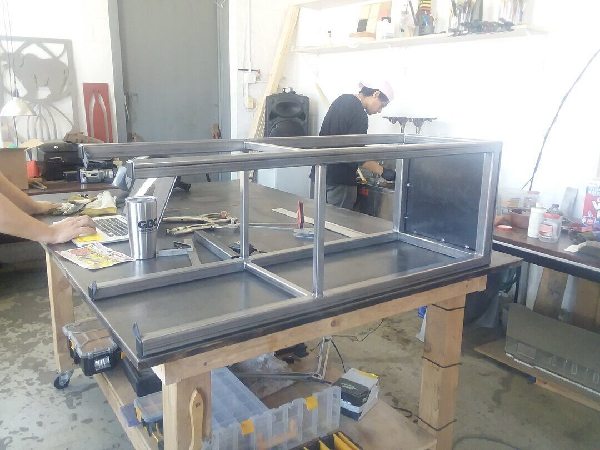
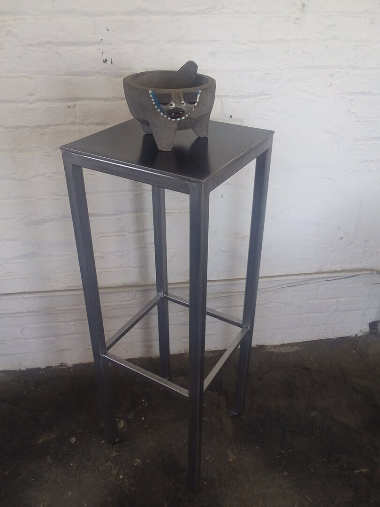
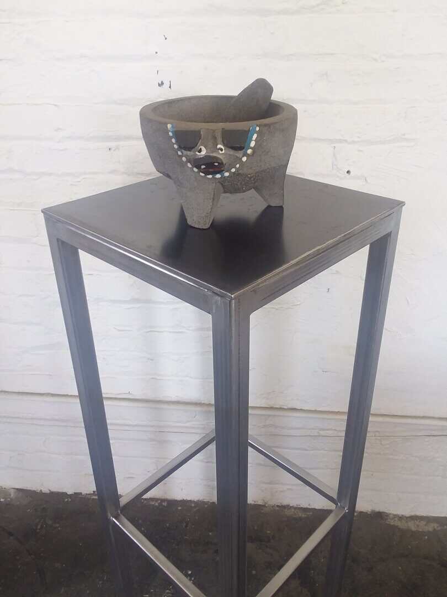
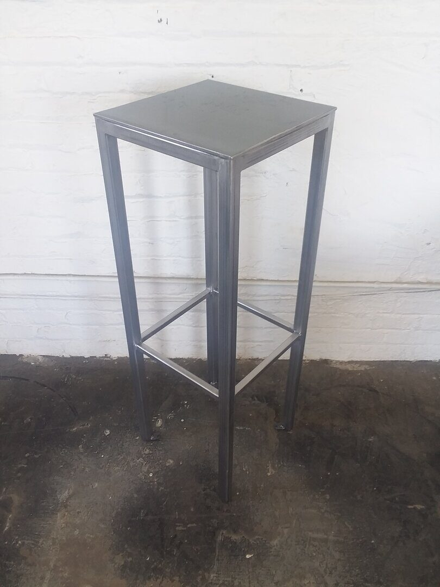
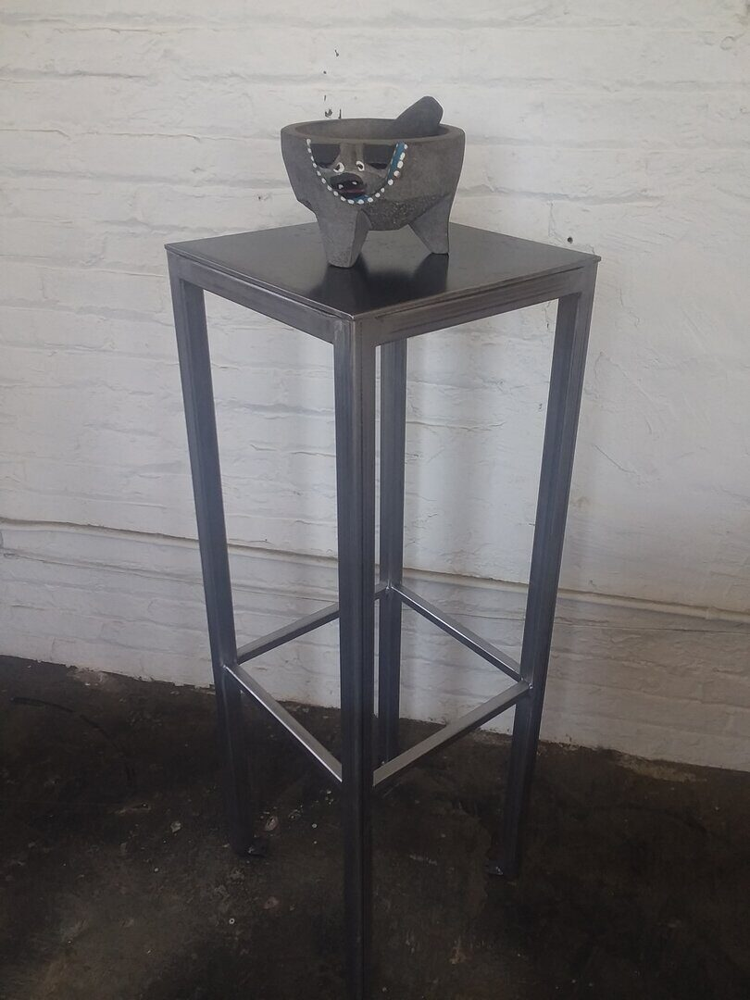

Objects / 2016
Colour Drop Pedestals
Christina Mackie, The Renaissance Society
Custom painted steel pedestal structures fabricated for Christina Mackie's Colour Drop installation at The Renaissance Society.
Colour Drop required display structures that could support the artist's glass elements while remaining visually disciplined within the exhibition.
ChiLab fabricated the steel pedestal system, resolving proportion, weld quality, surface preparation, and paint finish so the supports acted as part of the installation language.
The work sits in a familiar zone for the studio: precise fabrication in service of an artist's material world.
Details
- Year
2016 - Location
Chicago, IL - Category
Objects - Materials
Painted steel, welded steel frames
Credits
- Artist: Christina Mackie
- Venue: The Renaissance Society, University of Chicago
- Fabrication: West Supply LLC / ChiLab Studio
Download
Index




